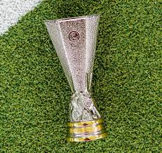

UEFA Europa League
The 2016 UEFA Europa League campaign was a historic one for Manchester United. Managed by Louis van Gaal for the group stage and the knockout phase up to the Round of 16, and then by José Mourinho who took charge in the summer of 2016 ahead of the latter stages, the club won the competition for the first time in its history. Victory in the final secured a direct route into the following season's UEFA Champions League.

Tournament Journey
Manchester United were drawn into Group B alongside Feyenoord (Netherlands), Fenerbahçe (Turkey), and Zorya Luhansk (Ukraine). Their group stage performance was inconsistent.
- Matchday 1: Feyenoord 1-0 Manchester United (Loss)
- Matchday 2: Manchester United 1-0 Zorya Luhansk (Win - Goal: Ibrahimović)
- Matchday 3: Manchester United 4-1 Fenerbahçe (Win - Goals: Pogba (2), Martial, Lingard)
- Matchday 4: Fenerbahçe 2-1 Manchester United (Loss - Goal: Rooney)
- Matchday 5: Manchester United 4-0 Feyenoord (Win - Goals: Rooney, Mata, Ibrahimović, Lingard)
- Matchday 6: Zorya Luhansk 0-2 Manchester United (Win - Goals: Ibrahimović, Mkhitaryan)
- Final Group Standings: Manchester United finished 2nd in Group B with 12 points, qualifying for the Round of 32.
Knockout Phase
Round of 32: Saint-Étienne (France)
- First Leg: Manchester United 3-0 Saint-Étienne (Goals: Ibrahimović (3))
- Second Leg: Saint-Étienne 0-1 Manchester United (Goal: Mkhitaryan)
- Aggregate: 4-0 to Manchester United.
Round of 16: Rostov (Russia)
- First Leg: Rostov 1-1 Manchester United (Goal: Mkhitaryan)
- Second Leg: Manchester United 1-0 Rostov (Goal: Mata)
- Aggregate: 2-1 to Manchester United.
Quarter-Final: Anderlecht (Belgium)
- First Leg: Anderlecht 1-1 Manchester United (Goal: Mkhitaryan)
- Second Leg: Manchester United 2-1 Anderlecht (AET) (Goals: Mkhitaryan, Rashford)
- Aggregate: 3-2 to Manchester United.
Semi-Final: Celta Vigo (Spain)
- First Leg: Manchester United 1-0 Celta Vigo (Goal: Rashford)
- Second Leg: Celta Vigo 1-1 Manchester United (Goal: Fellaini)
- Aggregate: 2-1 to Manchester United.
The Final
- Date: Wednesday, 24 May 2017
- Venue: Friends Arena, Solna, Stockholm, Sweden
- Opponent: Ajax (Netherlands)
- Manchester United Line-up: Romero; Valencia, Bailly, Blind, Darmian; Herrera, Fellaini, Pogba; Mkhitaryan (Carrick 90'), Mata (Lingard 84'), Rashford (Rooney 90+2').
- Match Summary: United controlled the game with a mature, physical performance. Goals from Paul Pogba (18') and Henrikh Mkhitaryan (48') sealed a comfortable victory.
- Result: Manchester United 2-0 Ajax
- Trophy Lifters: Captain Wayne Rooney and Michael Carrick lifted the trophy.
Key Players & Statistics
- Top Scorer: Zlatan Ibrahimović (5 goals in the competition, all before his injury in April).
- Crucial Contributor: Henrikh Mkhitaryan scored 6 goals in the knockout stages, including the vital opener in the quarter-final second leg and the sealer in the final.
- Emerging Talent: Marcus Rashford scored decisive goals in the quarter-final and semi-final.
- Defensive Rock: Sergio Romero was the designated goalkeeper for the Europa League and kept a tournament-high 8 clean sheets.
- Match Summary: United controlled the game with a mature, physical performance. Goals from Paul Pogba (18') and Henrikh Mkhitaryan (48') sealed a comfortable victory.
Significance & Legacy
- First Europa League Title: It was Manchester United's maiden triumph in the competition (formerly the UEFA Cup).
- European Treble: The win meant United had now won all three major European trophies (European Cup/Champions League, Europa League/UEFA Cup, and the now-defunct Cup Winners' Cup).
- Champions League Qualification: Winning the Europa League earned Manchester United a place in the 2017/18 UEFA Champions League group stage.
- José Mourinho's First Season: The trophy was the centrepiece of a successful first season for Mourinho, which also included an EFL Cup win.
Additional Facts
- This was the first major European final to be held in Sweden.
- The victory meant Manchester United would face UEFA Champions League winners Real Madrid in the 2017 UEFA Super Cup.
- The campaign is often remembered for the shift in approach under Mourinho in the knockout stages, prioritizing tactical discipline and physicality.